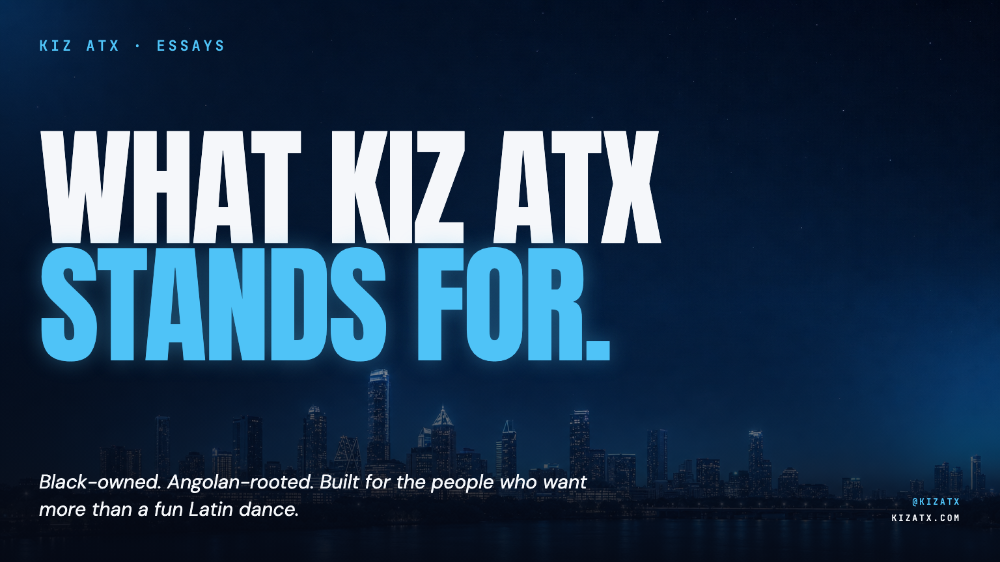

The Room Doubled in Four Months
A Sunday Urban Kiz practica in East Austin doubled from 26 to 61 monthly check-ins between April and July. No paid ads. Here is what actually worked.
Read →
Kizomba Is Angolan. And It's a Whole Diaspora.
On origin, diaspora, and the full lineage that made this dance. Semba, Zouk, Cabo Love, and the sound of Black America meeting in one room.
Read →
What Kiz ATX Stands For
Black-owned. Angolan-rooted. Built for the people who want more than a fun Latin dance.
Read →